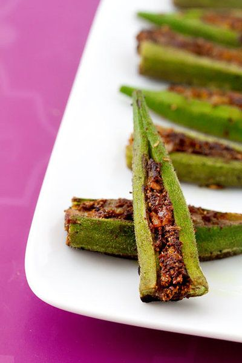

Stuffed Okra is super delicious and healthy recipe. Ladies Finger/Okra/Bhindi is a highly nutritious vegetable which helps in weight loss, good for the heart and helps in controlling blood sugar levels.

Ingredients
For The Spice Mix:
1/2 teaspoon vegetable oil
3 dried red chili peppers
1 tablespoon coriander seeds
1 teaspoon cumin seeds
1 teaspoon fennel seeds
For The Stuffing Masala:
1/2 small red onion, minced
1 clove garlic, minced
2 tablespoons vegetable oil
1/4 teaspoon turmeric
1/2 pound fresh tender okra (about 30 pods)
Method
For the spice mix, heat the oil in a small skillet over low heat until it shimmers. Add the remaining ingredients. Fry just until the spices turn slightly darker and you can smell their wonderful aroma. Transfer the spices to a plate to cool. Grind to a fine powder in a spice or coffee grinder.
For the stuffing masala, fry the onion and garlic in the oil in the skillet over medium heat, stirring occasionally, until the onion is soft and golden. Remove from heat.
Stir the spice mix, turmeric and salt into the onions. Mix well and salt to taste.
Wash the okra and pat dry. Cut off the stem end. Using a sharp knife, make an incision in the okra, starting at the stem end and stopping just before the point. Do not cut all the way through the okra. It has to be one whole piece.
Place an okra pod on a work surface. Pry open the slit with one hand, being careful not to tear it all the way through. Using your other hand, gently stuff a little of the masala into the slit and pack it down. Repeat for all okra pods.
Heat the oil in a large, shallow nonstick skillet over medium-high heat. Add the stuffed okra in a single layer, stuffed side facing up. Cook until the bottoms of the okra pods are brown.
Reduce the heat to low. Cover the skillet, venting it a little, and cook for about 7 minutes, until the okra are tender. Remove the lid, carefully flip the okra over and cook 2 more minutes.